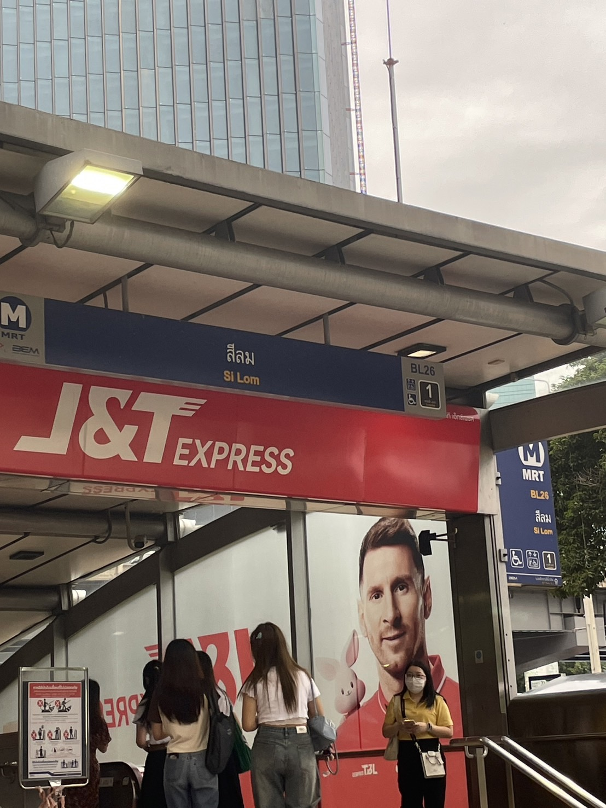

สามารถลงได้ 2 สถานีคือ
สถานีสีลม : ทางออก 1 เดินออกจากสถานีแล้วถึงทางเข้าประตู 4 (ใกล้สุด ลงแล้วถึงเลย)
สถานีลุมพินี : ทางออก 3 ต้องข้ามถนนวิทยุมาก่อน ถึงจะเจอทางเข้าประตู 2 (ที่ข้ามถนนเป็นทางม้าลายอยู่ตรงหน้าสถานีเลย ไม่มีสะพานลอย)